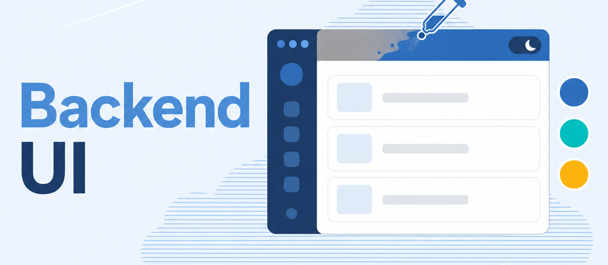
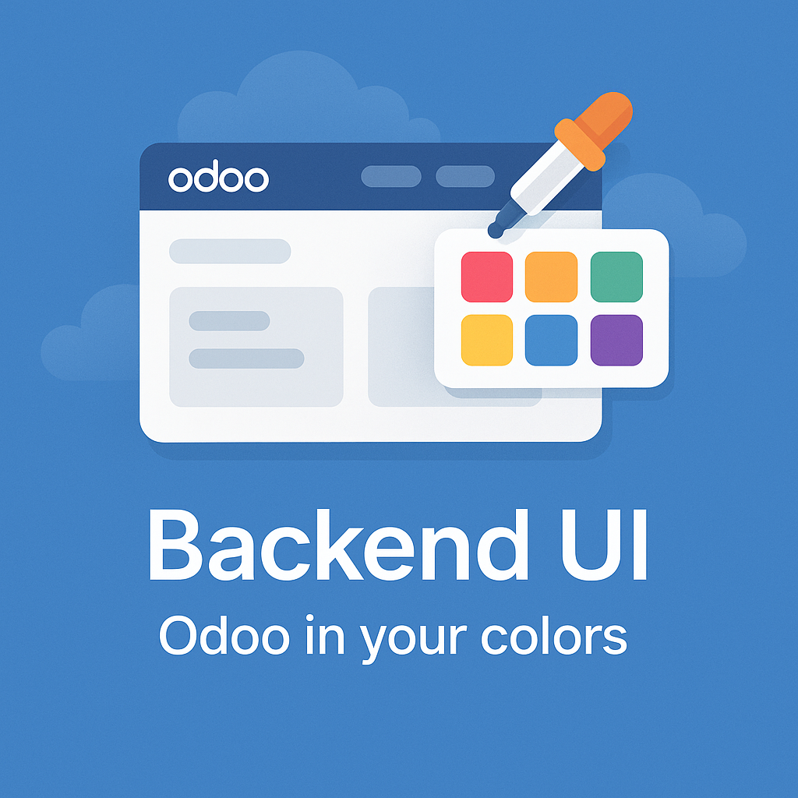
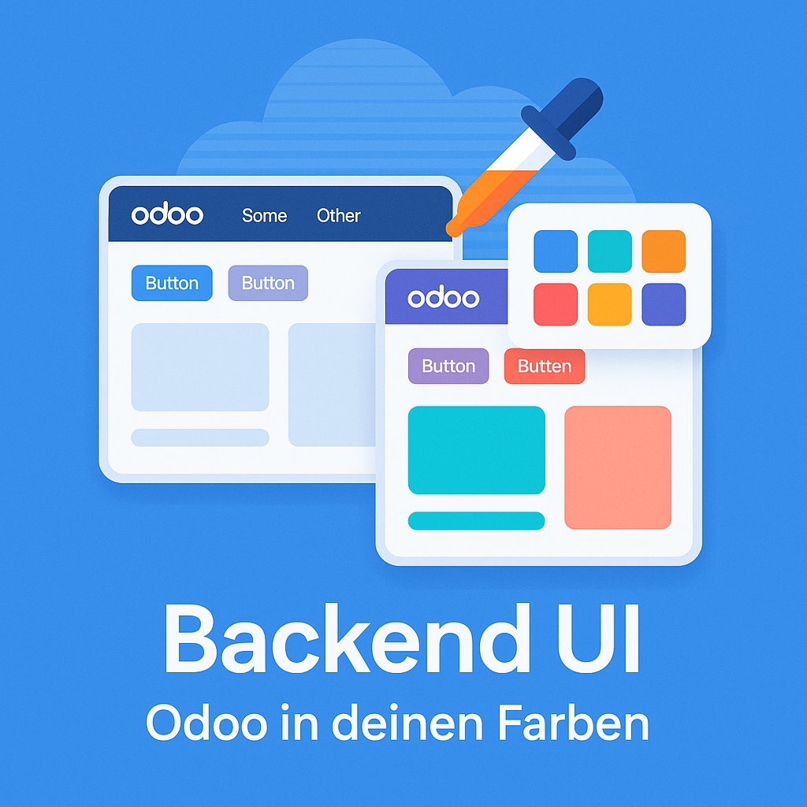
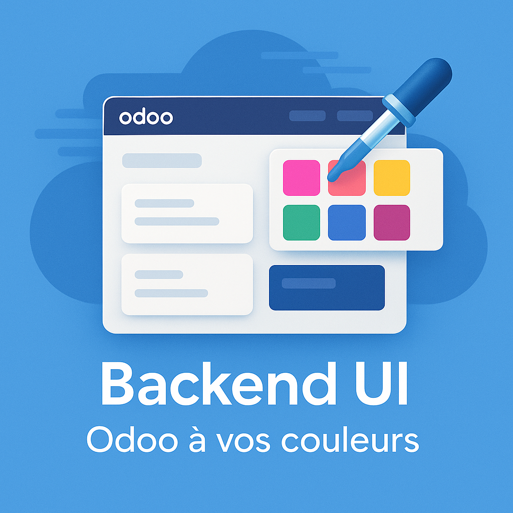
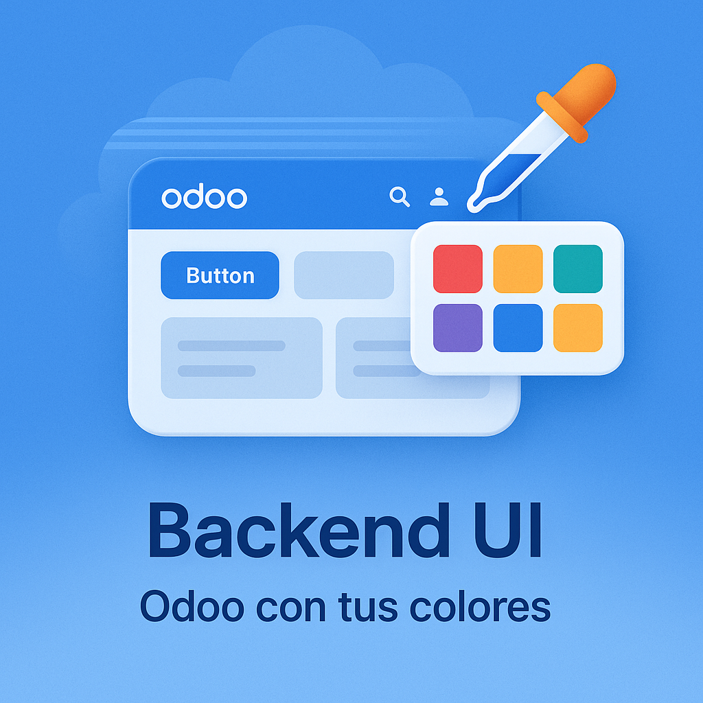

Odoo's backend looks the same everywhere, which is fine until you want your own brand in the tool your staff use all day. Backend UI lets an administrator set the colours of the navigation bar, buttons, links and list views — no developer, effective on save. Fourteen ready-made themes are included, all meeting the WCAG AA contrast requirement in both light and dark presentation, and every employee can switch to dark mode for themselves.
One help page in German and English, shipped inside the module. With Help Docs installed you search them in full text — and an AI assistant reads the same content through a machine-readable module card.
|
A person searches
Customizing Backend Colors
Customizing Backend Colors
eq_ownerp_ui lets you recolor the Odoo backend — navigation bar, links, buttons, list rows and the apps icon — to match your company's corporate identity, without touching any code. Where to find it Settings → Technical → Template Colors, under two sub-menus: Colors — the color-picker wizard; change any color and click "Apply" to update the whole backend immediately. Templates …
|
An assistant asks
eq.helper.doc.get_capability_card(
"eq_ownerp_ui") Returns the models, fields, methods and permission rules of Backend UI in a form an assistant can act on — instead of guessing them from screenshots.
“Where does a user switch on dark mode?” — answered from the module card, not from training data.
|
Full-text search and module card come from Help Docs (eq_helper). This module ships the content — no extra configuration.
Background, text and hover colour of the navigation bar; primary and secondary buttons; links, smart counters and highlights; row and hover backgrounds in list views — each set independently, so tables fit the scheme too.
Each user switches between light and dark from their own menu. The choice is stored on the user account, so it follows them to another browser or machine and does not touch anyone else. Every colour set brings a second, complete set for dark presentation; templates without one are given readable values automatically, so dark mode is never unusable.
Four classic base themes, six for particular industries and four terminal themes. All of them reach the 4.5:1 contrast ratio required by WCAG AA in both presentations — checked for navigation bar, buttons, body text, secondary text and links, so accessibility requirements are met without your own testing.
A colour combination is saved as a named template and activated with a click, company-wide. In a multi-company setup each subsidiary gets its own, so staff can see at a glance which entity they are working in.
Button colours in automatically sent emails can be taken over from the scheme at the press of a button, so outgoing correspondence carries the house colours too. Optionally a company image can be set as the background of the app menu.
Colour changes show up across the interface right after saving — no restart, no manual reload. One click returns everything to the standard values, which is what makes experimenting safe.
Does it work with Odoo Community as well as Enterprise?
Yes, with both editions and without extra adjustments.
Can an employee's dark mode be overruled centrally?
The choice belongs to the user and is stored on their account. The company sets the colours; the individual decides between light and dark.
Which Odoo editions are supported?
The module runs on Odoo Community and Odoo Enterprise, version 19.0 — self-hosted or on Odoo.sh. Odoo Online, the hosted SaaS edition, does not accept apps from the store, so no third-party module can run there.
Which other modules does it require?
It requires base_setup, mail, web. Odoo resolves and installs these dependencies itself when you install the module.
Under which license is the module published?
The module is published under the LGPL-3 open-source license.
Will it keep working after an Odoo update?
Yes, within 19.0.x. A move to the next major Odoo version is delivered as a new module version.
Where do I get support?
Write to support@equitania.de or use our support portal at support.equitania.de.
Can I see the module in action first?
We do not run a public demo instance. Write to support@equitania.de and we will walk you through it.

Das Odoo-Backend sieht überall gleich aus — was in Ordnung ist, bis man die eigene Marke in dem Werkzeug haben möchte, mit dem die Belegschaft den ganzen Tag arbeitet. Backend UI lässt einen Administrator die Farben von Navigationsleiste, Schaltflächen, Verweisen und Listenansichten festlegen — ohne Entwickler, wirksam mit dem Speichern. Vierzehn fertige Themen sind dabei, alle mit dem Kontrastwert nach WCAG AA in heller wie dunkler Darstellung, und jeder Mitarbeiter kann für sich auf dunkle Darstellung umschalten.
Eine Hilfeseite auf Deutsch und Englisch, im Modul mitgeliefert. Mit installiertem Help Docs durchsuchen Sie sie im Volltext — und ein KI-Assistent liest dieselben Inhalte über eine maschinenlesbare Modulkarte.
|
Der Mensch sucht
Backend-Farben anpassen
Backend-Farben anpassen
eq_ownerp_ui ermöglicht es, das Odoo-Backend — Navigationsleiste, Links, Buttons, Listenzeilen und das App-Icon — an das Corporate Design des Unternehmens anzupassen, ganz ohne Code. Wo zu finden Einstellungen → Technisch → Template Colors, mit zwei Untermenüs: Colors — der Farbauswahl-Assistent; einen Wert ändern und auf „Anwenden“ klicken, um das gesamte Backend sofort zu …
|
Die KI fragt nach
eq.helper.doc.get_capability_card(
"eq_ownerp_ui") Liefert Modelle, Felder, Methoden und Rechteregeln von Backend UI in einer Form, mit der ein Assistent arbeiten kann — statt sie aus Bildschirmfotos zu raten.
„Wo stellt ein Benutzer den Dunkelmodus ein?“ — beantwortet aus der Modulkarte, nicht aus Trainingsdaten.
|
Volltextsuche und Modulkarte stellt das Modul Help Docs (eq_helper) bereit. Die Inhalte liefert dieses Modul mit — ohne Zusatzkonfiguration.
Hintergrund-, Schrift- und Hover-Farbe der Navigationsleiste; primäre und sekundäre Schaltflächen; Verweise, Zählknöpfe und Markierungen; Zeilen- und Hover-Hintergründe in Listenansichten — jeweils unabhängig einstellbar, sodass auch Tabellen ins Farbkonzept passen.
Jeder Benutzer wechselt im eigenen Menü zwischen hell und dunkel. Die Wahl wird am Benutzerkonto gespeichert, folgt ihm also an einen anderen Browser oder Rechner und berührt niemanden sonst. Jede Farbvorlage bringt einen zweiten, vollständigen Satz für die dunkle Darstellung mit; Vorlagen ohne eigenen erhalten automatisch lesbare Werte — die dunkle Darstellung ist damit nie unbrauchbar.
Vier klassische Grundthemen, sechs für bestimmte Branchen und vier Terminal-Themen. Alle erreichen in beiden Darstellungen den nach WCAG AA geforderten Kontrastwert 4,5:1 — geprüft für Navigationsleiste, Schaltflächen, Fließtext, Sekundärtext und Verweise, sodass Anforderungen an Barrierefreiheit ohne eigene Prüfung erfüllt sind.
Eine Farbkombination wird als benannte Vorlage gespeichert und per Klick unternehmensweit aktiviert. In einer Mehrfirmen-Umgebung erhält jede Tochtergesellschaft eine eigene, sodass Mitarbeiter auf einen Blick erkennen, in welchem Mandanten sie arbeiten.
Die Farben der Schaltflächen in automatisch versendeten E-Mails lassen sich per Knopfdruck aus dem Farbschema übernehmen, damit auch der Schriftverkehr die Hausfarben trägt. Optional lässt sich ein Firmenbild als Hintergrund des App-Menüs hinterlegen.
Farbänderungen werden nach dem Speichern umgehend in der gesamten Oberfläche sichtbar — kein Neustart, kein manuelles Nachladen. Ein Klick führt alles auf die Standardwerte zurück; das erst macht das Ausprobieren gefahrlos.
Funktioniert es mit Community wie mit Enterprise?
Ja, mit beiden Editionen und ohne zusätzliche Anpassungen.
Lässt sich die dunkle Darstellung eines Mitarbeiters zentral übersteuern?
Die Wahl gehört dem Benutzer und wird an seinem Konto gespeichert. Das Unternehmen legt die Farben fest; über hell oder dunkel entscheidet der Einzelne.
Welche Odoo-Editionen werden unterstützt?
Das Modul läuft mit Odoo Community und Odoo Enterprise in der Version 19.0 — selbst gehostet oder auf Odoo.sh. Odoo Online, die gehostete SaaS-Variante, lässt keine Apps aus dem Store zu; dort läuft kein Drittanbieter-Modul.
Welche anderen Module werden benötigt?
Benötigt werden base_setup, mail, web. Odoo löst diese Abhängigkeiten bei der Installation selbst auf und installiert sie mit.
Unter welcher Lizenz steht das Modul?
Das Modul steht unter der Open-Source-Lizenz LGPL-3.
Funktioniert es nach einem Odoo-Update weiter?
Ja, innerhalb von 19.0.x. Der Wechsel auf die nächste Odoo-Hauptversion wird als neue Modulversion ausgeliefert.
Wo erhalte ich Unterstützung?
Schreiben Sie an support@equitania.de oder nutzen Sie unser Support-Portal unter support.equitania.de.
Kann ich das Modul vorab in Aktion sehen?
Wir betreiben keine öffentliche Demo-Instanz. Schreiben Sie an support@equitania.de, dann führen wir Sie durch das Modul.

Le backend d'Odoo se ressemble partout, ce qui convient jusqu'à ce que vous vouliez votre marque dans l'outil que vos équipes utilisent toute la journée. Backend UI permet à un administrateur de définir les couleurs de la barre de navigation, des boutons, des liens et des listes — sans développeur, effectif dès l'enregistrement. Quatorze thèmes prêts à l'emploi sont inclus, tous conformes au contraste WCAG AA.
Une page d’aide en allemand et en anglais, livrées dans le module. Avec Help Docs installé, vous les cherchez en texte intégral — et un assistant IA lit le même contenu via une fiche de module lisible par machine.
|
Une personne cherche
Customizing Backend Colors
Customizing Backend Colors
eq_ownerp_ui lets you recolor the Odoo backend — navigation bar, links, buttons, list rows and the apps icon — to match your company's corporate identity, without touching any code. Where to find it Settings → Technical → Template Colors, under two sub-menus: Colors — the color-picker wizard; change any color and click "Apply" to update the whole backend immediately. Templates …
|
Un assistant demande
eq.helper.doc.get_capability_card(
"eq_ownerp_ui") Renvoie les modèles, champs, méthodes et règles de droits de Backend UI sous une forme exploitable par un assistant — au lieu de les deviner à partir de captures d’écran.
« Où un utilisateur active-t-il le mode sombre ? » — répondu depuis la fiche du module, pas depuis les données d’entraînement.
|
La recherche plein texte et la fiche de module sont fournies par Help Docs (eq_helper). Ce module en livre le contenu — sans configuration supplémentaire.
Les pages d’aide sont livrées en allemand et en anglais ; dans une autre langue d’interface, la version anglaise s’affiche.
Fond, texte et couleur de survol de la barre de navigation ; boutons primaires et secondaires ; liens, compteurs et surlignages ; fonds de ligne et de survol dans les listes — chacun réglable indépendamment.
Chaque utilisateur bascule entre clair et sombre depuis son propre menu. Le choix est enregistré sur le compte et le suit sur un autre navigateur ou une autre machine. Chaque jeu de couleurs comporte un second jeu complet pour le mode sombre.
Quatre thèmes de base classiques, six sectoriels et quatre thèmes terminal. Tous atteignent le rapport de contraste 4,5:1 exigé par WCAG AA dans les deux présentations.
Une combinaison de couleurs est enregistrée comme modèle nommé et activée d'un clic. En multi-sociétés, chaque filiale reçoit la sienne, de sorte que chacun voit immédiatement dans quelle entité il travaille.
Les couleurs des boutons dans les e-mails automatiques peuvent être reprises du schéma d'un clic. Une image d'entreprise peut être définie comme fond du menu des applications.
Les changements de couleur apparaissent immédiatement après l'enregistrement — sans redémarrage ni rechargement manuel. Un clic ramène tout aux valeurs standard.
Fonctionne-t-il avec Community comme avec Enterprise ?
Oui, avec les deux éditions et sans adaptation supplémentaire.
Le mode sombre d'un collaborateur peut-il être imposé centralement ?
Le choix appartient à l'utilisateur et est enregistré sur son compte. L'entreprise définit les couleurs ; l'individu tranche entre clair et sombre.
Quelles éditions d'Odoo sont prises en charge ?
Le module fonctionne avec Odoo Community et Odoo Enterprise, version 19.0 — en auto-hébergement ou sur Odoo.sh. Odoo Online, l’édition SaaS hébergée, n’accepte aucune application du store ; aucun module tiers n’y fonctionne.
Quels autres modules sont nécessaires ?
Il requiert base_setup, mail, web. Odoo résout et installe ces dépendances lui-même lors de l'installation.
Sous quelle licence le module est-il publié ?
Le module est publié sous la licence libre LGPL-3.
Continuera-t-il de fonctionner après une mise à jour d'Odoo ?
Oui, au sein de 19.0.x. Le passage à la version majeure suivante d'Odoo est livré sous forme d'une nouvelle version du module.
Où obtenir de l'assistance ?
Écrivez à support@equitania.de ou utilisez notre portail d'assistance sur support.equitania.de.
Puis-je voir le module en action au préalable ?
Nous n'exploitons pas d'instance de démonstration publique. Écrivez à support@equitania.de et nous vous guiderons.

El backend de Odoo tiene el mismo aspecto en todas partes, lo cual está bien hasta que se quiere la marca propia en la herramienta que la plantilla usa todo el día. Backend UI permite a un administrador fijar los colores de la barra de navegación, los botones, los enlaces y las listas — sin desarrollador y con efecto al guardar. Se incluyen catorce temas listos, todos con el contraste WCAG AA.
Una página de ayuda en alemán e inglés, incluidas en el módulo. Con Help Docs instalado las busca a texto completo — y un asistente de IA lee el mismo contenido mediante una ficha de módulo legible por máquina.
|
Una persona busca
Customizing Backend Colors
Customizing Backend Colors
eq_ownerp_ui lets you recolor the Odoo backend — navigation bar, links, buttons, list rows and the apps icon — to match your company's corporate identity, without touching any code. Where to find it Settings → Technical → Template Colors, under two sub-menus: Colors — the color-picker wizard; change any color and click "Apply" to update the whole backend immediately. Templates …
|
Un asistente pregunta
eq.helper.doc.get_capability_card(
"eq_ownerp_ui") Devuelve los modelos, campos, métodos y reglas de permisos de Backend UI en una forma con la que un asistente puede trabajar — en lugar de deducirlos de capturas de pantalla.
«¿Dónde activa un usuario el modo oscuro?» — respondido desde la ficha del módulo, no desde los datos de entrenamiento.
|
La búsqueda a texto completo y la ficha de módulo las proporciona Help Docs (eq_helper). Este módulo aporta el contenido — sin configuración adicional.
Las páginas de ayuda se entregan en alemán e inglés; en otro idioma de interfaz se muestra la versión inglesa.
Fondo, texto y color de paso del ratón de la barra de navegación; botones primarios y secundarios; enlaces, contadores y resaltes; fondos de fila y de paso en las listas — cada uno ajustable por separado.
Cada usuario alterna entre claro y oscuro desde su propio menú. La elección se guarda en la cuenta y le acompaña a otro navegador u ordenador. Cada juego de colores incluye un segundo juego completo para el modo oscuro.
Cuatro temas base clásicos, seis sectoriales y cuatro temas de terminal. Todos alcanzan la relación de contraste 4,5:1 que exige WCAG AA en ambas presentaciones.
Una combinación de colores se guarda como plantilla con nombre y se activa con un clic. En multiempresa cada filial recibe la suya, de modo que el personal ve de un vistazo en qué entidad trabaja.
Los colores de los botones en los correos automáticos pueden tomarse del esquema con un clic. Opcionalmente puede fijarse una imagen corporativa como fondo del menú de apps.
Los cambios de color se ven en toda la interfaz justo después de guardar — sin reinicio ni recarga manual. Un clic devuelve todo a los valores estándar.
¿Funciona tanto con Community como con Enterprise?
Sí, con ambas ediciones y sin ajustes adicionales.
¿Puede imponerse centralmente el modo oscuro de un empleado?
La elección pertenece al usuario y se guarda en su cuenta. La empresa define los colores; el individuo decide entre claro y oscuro.
¿Qué ediciones de Odoo son compatibles?
El módulo funciona con Odoo Community y Odoo Enterprise, versión 19.0 — autoalojado o en Odoo.sh. Odoo Online, la edición SaaS alojada, no admite aplicaciones de la tienda; allí no funciona ningún módulo de terceros.
¿Qué otros módulos se necesitan?
Requiere base_setup, mail, web. Odoo resuelve e instala estas dependencias por sí mismo durante la instalación.
¿Bajo qué licencia se publica el módulo?
El módulo se publica bajo la licencia de código abierto LGPL-3.
¿Seguirá funcionando tras una actualización de Odoo?
Sí, dentro de 19.0.x. El cambio a la siguiente versión principal de Odoo se entrega como una nueva versión del módulo.
¿Dónde obtengo asistencia?
Escriba a support@equitania.de o utilice nuestro portal de asistencia en support.equitania.de.
¿Puedo ver el módulo en funcionamiento antes?
No disponemos de una instancia de demostración pública. Escriba a support@equitania.de y le mostraremos el módulo.
We are happy to support you · Wir unterstützen Sie gerne.
EN · All information on this page is provided for product description purposes only and is not legally binding. It constitutes neither a guarantee of quality nor an assurance of any particular scope of functions, fitness for a particular purpose or specific results; only the contractual agreements and the scope of delivery of the version actually installed are authoritative. Screenshots show example configurations.
DE · Alle Angaben auf dieser Seite dienen der Produktbeschreibung und sind rechtlich unverbindlich. Sie stellen weder eine Beschaffenheitsgarantie noch eine Zusicherung eines bestimmten Funktionsumfangs, einer Eignung für einen bestimmten Zweck oder eines bestimmten Ergebnisses dar; maßgeblich sind allein die vertraglichen Vereinbarungen und der Lieferumfang der jeweils installierten Version. Abbildungen zeigen Beispielkonfigurationen.
FR · Toutes les informations figurant sur cette page servent à la description du produit et n'ont pas de valeur juridiquement contraignante. Elles ne constituent ni une garantie de qualité ni l'assurance d'un périmètre fonctionnel déterminé, d'une adéquation à un usage particulier ou d'un résultat donné ; seuls les accords contractuels et l'étendue de la livraison de la version effectivement installée font foi. Les illustrations présentent des configurations à titre d'exemple.
ES · Toda la información de esta página tiene carácter descriptivo y no es jurídicamente vinculante. No constituye una garantía de calidad ni el aseguramiento de un alcance funcional determinado, de la idoneidad para un fin concreto o de un resultado específico; únicamente son determinantes los acuerdos contractuales y el alcance de suministro de la versión efectivamente instalada. Las imágenes muestran configuraciones de ejemplo.